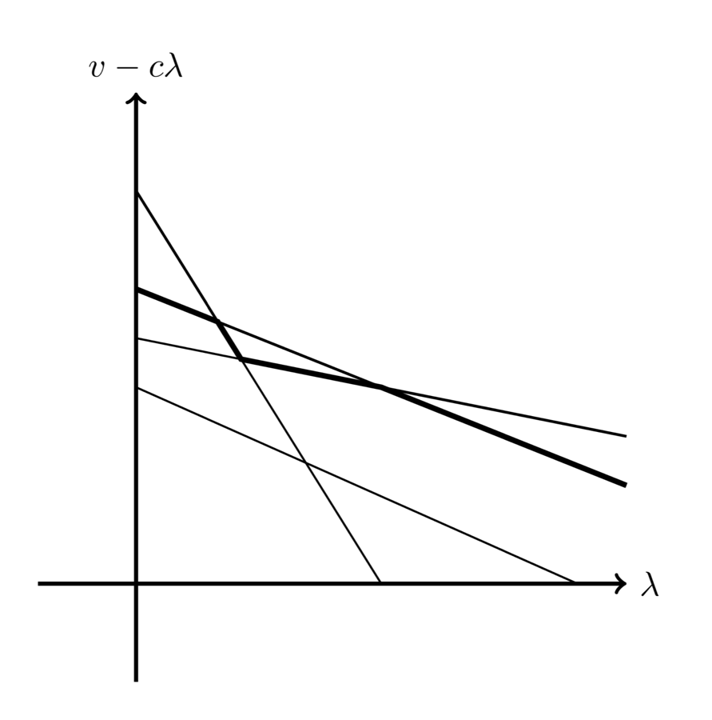

- 折れ点 \(O(m^2)\) → \(O(mp^{1/3})\)利用者ごとに \(p\) 枚まで配る個数制約で、署名関数の折れ点の数の上界。計算幾何の \(p\)-level の結果を使い、従来の \(O(m^2)\) を改善した。
- 更新 \(O(t\log k)\)利用者 1 人の変更で、曲線を表す傾きの差分の表が \(t\) 箇所変わるときの手間。曲線全体は作り直さない（定理 3）。
- \(m=10^7\) で 101.8 秒\(p=2000\) のとき、署名関数の折れ点を \(p\)-level の方法で求めた時間。単純な走査法は TLE（時間切れ）だった（論文 Table 2、一様乱数の 10 回平均）。
予算を一つ決めて解くだけでは、予算額そのものを決める問いに答えられない
論文が想定するのは、配車アプリの利用者にクーポンを配る場面である。利用者（論文の用語ではエージェント）ごとに候補のクーポンがあり、それぞれに価値 \(v\)（乗車回数などの指標の増分）と費用 \(c\) がある。総費用を予算 \(B\) 以下に抑えながら、価値の合計を最大にする組み合わせを選ぶ。これはナップザック問題の一種である。
しかし実務では、予算を一つ決めて解くだけでは足りないことが多い。キャンペーンの総予算をいくらにするか、目標の利益を得るのにいくら要るかを判断するには、予算と利益の関係を表す曲線全体が要る。別の施策と予算を分け合うときも、配分を最適化するアルゴリズムがこの曲線を何度も評価することになる。さらに \(v\) や \(c\) はモデルの予測値なので、利用者が乗車するたびに予測が変わり、曲線も変わる。
そこで論文はトレードオフ曲線全体を保ちながら、各利用者のクーポン候補の追加・削除に合わせて更新する問題を扱う。利用者は数百万人、一人あたりの候補は数百枚程度で、どの一人も全体にはほとんど影響しない状況を想定している。
整数解の代わりに線形計画緩和の最適値を、予算の関数として追う
利用者 \(i\) の候補クーポンの集合を \(E_i\)、同時に配ってよい組み合わせの族を \(\mathcal{F}_i\) とする。制約は 3 種類を考える。1 枚だけ選ぶ多肢選択制約、\(p\) 枚まで選ぶ個数制約、そしてそれらを一般化したマトロイド制約である。マトロイド制約の例として論文は週末用 2 枚・平日用 2 枚まで、ただし合計 3 枚まで、という条件を挙げている。
整数解の最適値 \(\bar\tau(B)\) を求めるのは NP 困難なので、論文は上の線形計画緩和の最適値 \(\tau(B)\) を予算 \(B\) の関数として追い、これを（分数の）トレードオフ曲線と呼ぶ。両者の差は一般には利用者 1 人が生み出せる価値の合計以下で、各利用者の制約がマトロイドならクーポン 1 枚の価値の最大値 \(\|v\|_\infty\) 以下に収まる（Camerini と Vercellis の結果）。一人の価値が全体に比べて小さい大規模な配布では、\(\tau\) は \(\bar\tau\) のよい近似になる。
利用者ごとの署名関数を足し合わせれば、トレードオフ曲線全体が得られる
予算 1 単位あたりの値段 \(\lambda \ge 0\) を決めると、各利用者は「価値 − \(\lambda\) × 費用」が最大になる組み合わせを、他の利用者とは無関係に選べる。この最大値を \(\lambda\) の関数とみたものが、利用者 \(i\) の署名関数 \(f_i(\lambda)\) である。\(f_i\) は区分線形で凸になる。
最後の式はラグランジュ双対で、論文の定理 4 は、\(\tau\) が区分線形で凹であり、この式で与えられることを示す。\(\tau\) の傾きが変わる予算は、\(f\) の折れ点と一対一に対応する。各 \(f_i\) を「折れ点の位置と、そこでの傾きの変化量」の表（傾き差分形式）で持てば、\(f\) は表をつなぎ合わせて並べ替えるだけで作れる。署名関数は利用者ごとに独立に計算できるので、並列化もしやすい。
\(f\) の折れ点が \(k\) 個あるとき、累積和のデータ構造を使うと次の操作ができる。予算 \(B\) から \(\tau(B)\) を求める評価と、目標の利益に必要な予算を求める逆引きは、どちらも二分探索で \(O(\log k)\) の時間で求まる。利用者 1 人の情報が変わったときは、その人の \(f_i\) を差し替えるだけでよく、表が \(t\) 箇所変わるなら \(O(t\log k)\) で済む（定理 3）。曲線の一部（\(t\) 個の折れ点）を書き出すのは \(O(\log k + t)\) である。
個数制約では、計算幾何の \(p\)-level を使うと、署名関数の折れ点は \(O(mp^{1/3})\) 個に抑えられる
あとは各利用者の署名関数を求めればよい。個数制約（\(p\) 枚まで）の場合、候補 \(e\) ごとに直線 \(\ell_e(\lambda) = v_e - \lambda c_e\) を引くと、\(f(\lambda)\) は各 \(\lambda\) で上から \(p\) 本の直線の値の和になる（価値・費用 0 のダミーを \(p\) 個足して、ちょうど \(p\) 枚選ぶ形にする）。直線どうしの交点は \(O(m^2)\) 個あり、これが Pisinger による従来の上界だった。
論文は、上から \(p\) 番目の直線がつくる折れ線（計算幾何でいう \(p\)-level）に注目する。上位 \(p\) 本の中で順位が入れ替わっても和は変わらないので、\(f\) の傾きが変わりうるのは \(p\)-level の頂点だけである。\(p\)-level の頂点数には \(O(mp^{1/3})\) という上界（Dey）が知られているので、署名関数の折れ点も \(O(mp^{1/3})\) 個に抑えられる。全体の計算時間は \(O((k+m)\log m)\) で（定理 1）、多肢選択制約（\(p=1\)）では既存の静的な計算法と同じ \(O(m\log m)\) で更新もできる。

マトロイド制約では、\(f\) の折れ点は重み \(v_e - \lambda c_e\) のもとでの最適基が入れ替わる点に当たる。折れ点の数は同じく \(O(mp^{1/3})\)（\(p\) はマトロイドの階数）で、この数が必要になるマトロイドもある。一般のマトロイドには \(p\)-level のような専用の算法がないため、論文は凸な区分線形関数の折れ点を \(O(k)\) 回の評価で見つける Eisner–Severance 法を使い、1 回の評価に最適基の計算（時間 \(T\)）を当てる。全体の計算時間は \(O(Tk + k\log m)\) になる（定理 2）。このほか、マトロイド制約では分数になる変数が高々 2 個の最適解があること（定理 7）、目的関数を劣モジュラにしても署名関数は区分線形・凸のままだが、提案する算法はそのままでは使えないことも述べている。
実装面では署名関数の計算をユーザー定義関数にし、残りの集計を OLAP データベース（例として ClickHouse）のウィンドウ集計で更新し続ける方法を技術付録で示している。
一様乱数の実験では、\(p\) が小さいと単純な走査法が速く、\(p\) が大きいと \(p\)-level の方法が速かった
論文は主に理論の研究だが、個数制約の場合について、署名関数の折れ点を求める 2 つの実装を比べている。一つは \(p\)-level のデータ構造を使う方法（表の opt）、もう一つは現在の \(p\) 番目の直線との交点をすべて調べながら進む走査法（scan、計算時間 \(O(km)\)）である。数値は一様分布から引き、各設定 10 回の平均を M2 Max の Mac で測った。表の \(m\) は 1 つの署名関数に入る直線の本数である。
\(p=20, 40\) では走査法のほうが速く、\(m=10^7\)、\(p=20\) で 13.0 秒対 100.5 秒だった。論文は、\(p\) が小さいと折れ点の数 \(k\) が \(m\) よりずっと小さくなるためだと説明している（\(p=1\) なら \(k\) は一様乱数の点の凸包の頂点数で抑えられ、その期待値は \(O(\log m)\)）。\(p\) が大きくなると \(k\) も増え、走査法は遅くなる。\(p=2000\) では \(m=10^6\) で 72.5 秒対 7.6 秒となり、\(m=10^7\) では走査法が TLE になった。\(p=m/5\) では \(m=5\times10^5\) 以上で走査法が TLE になり、\(p\)-level の方法は \(m=10^7\) で 134.0 秒だった。
マトロイド制約についてはラミナーマトロイドで Eisner–Severance 法を実装し、署名関数の計算時間を示している（Table 3）。\(m=10^4\) で 1.24 秒、\(m=7\times10^4\) で 44.8 秒である。論文はこれを動作例と位置づけている。
数値と定理の書き方は IJCAI 2025 の掲載版（Proceedings pp. 2575–2582）による。arXiv v2（2026 年 9 月 20 日）では「いくつかの誤りを修正した」とされ、表の数値は同じだが、定理 1 の計算時間を \(O(mp^{1/3}\log m)\) と書き直し、opt の実装を Chan の kinetic heap 法（\(O(m\log m + k\log^{1+\varepsilon} m)\)）と明記している。掲載版では opt を \(O((k+m)\log m)\) の方法と説明している。TLE の制限時間と、価値・費用を引いた一様分布の範囲は、どちらの版にも書かれていない。
予算を一つに固定せず、あらゆる予算での最適値を曲線として保つ
この論文は効果の推定を扱わない。各クーポンの価値 \(v\)（乗車回数などの増分）と費用 \(c\) は、モデルの予測値として与えられる前提である。費用も利用者とクーポンの組ごとに与えられる非負の定数で、反応に応じて費用が変わる場合を論文は区別して論じていない。処置は多値で、一人に複数枚を組み合わせて配ることも含む（多肢選択・個数・マトロイド制約）。実験は計算時間だけを測ったもので、実際の配布データでの効果の評価はない。
予算制約は総費用 \(c\cdot x \le B\) の形で入る。ただし特定の \(B\) で解くのではなく、すべての \(B \ge 0\) での線形計画緩和の最適値を曲線 \(\tau(B)\) として求め、予測の更新に合わせて保ち続けるのがこの論文の特徴である。
ROI 順の割り当てとの関係は次のように整理できる（解説者の注）。各利用者の候補が 1 枚だけなら \(f_i(\lambda) = \max(0,\, v_i - \lambda c_i)\) で、折れ点は \(\lambda = v_i / c_i\) にある。このとき \(\tau(B)\) を求めることは、ナップザック問題の連続緩和を ROI（\(v/c\)）の大きい順に詰めて解くことと同じで、\(\tau\) の傾きは ROI を大きい順に並べたものになる。候補が複数あると、折れ点は「上位の選択肢に乗り換えたときの価値の増分 ÷ 費用の増分」になる。図 1 では \(\tau\) の傾き 4、3、1.5、1 が、B の（4, 1）、A の（6, 2）、B の（4, 1）→（7, 3）への乗り換え、A の（6, 2）→（9, 5）への乗り換えにそれぞれ当たる。\(\lambda\) はその予算で割り当てを打ち切る ROI のしきい値と読める。この論文は ROI 順の割り当てを多値の処置と組み合わせの制約に広げ、予算のすべての値について一度に求めるものと位置づけられる。
@inproceedings{cong2025tradeoff,
title = {Large-Scale Trade-Off Curve Computation for Incentive Allocation with Cardinality and Matroid Constraints},
author = {Cong, Yu and Xu, Chao and Zhou, Yi},
booktitle = {Proceedings of the Thirty-Fourth International Joint Conference on Artificial Intelligence, {IJCAI-25}},
publisher = {International Joint Conferences on Artificial Intelligence Organization},
pages = {2575--2582},
year = {2025},
doi = {10.24963/ijcai.2025/287}
}